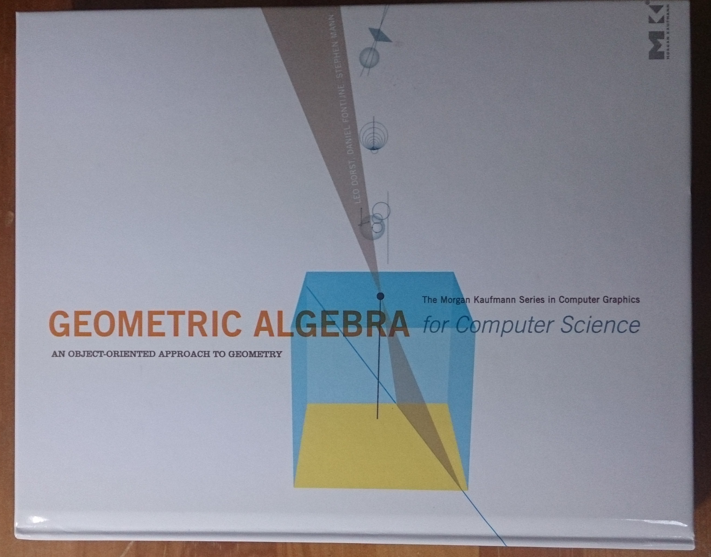

Geometric Algebra 幾何学的代数
これは幾何学的代数をテーマにした本
"Geometric Algebra for Computer Science", Leo Dorst, Daniel Fontijne, Stephen Mann (ISBN 9780123749420)
の紹介のために書きました。 この本は幾何学的代数の導入から応用までを扱っていますがその内容や語り口に至るまでも素晴らしくいままでに読んだ中でもとびきり良い本です。 レビューといった類ではなくこの本の題材となっているものを本の切り口に沿って説明できればとはじめたのですが私の力ではとても難しいと思い知りました。 ですがこの並外れた本の内容や雰囲気まではかなわなくてもそのかけらでも伝えられればうれしいです。
幾何学的代数(Geometric Algebra)は幾何学的な対象がつくる代数系だといえます。 この代数系は幾何学積(geometric products)に基づいています。幾何学積の実際の扱いは簡単とはいえませんがその基本的な概念は意外に簡単で初等的でさえあります。

つまり基本的なアイデアは内積と面積などを組にして一度に扱うと話がむしろ簡単になる、ということです。 こういうことはよくあることですよね。
この幾何学積は空間やもっと高い次元へも拡張できます。 それには向きのついた平行四辺形や平行六面体の拡張概念"k-blade"と内積の拡張概念"contraction"(縮約)が必要になります。
前者はベクトルu,vでできる向きのついた平行四辺形(面積要素)をu^vと書いて2-bladeと呼び、u,v,wが作る体積要素を3-blade u^v^wとするといった具合です。 ついでにただのベクトルは1-blade、スカラーは0-bladeということにします。
後者はaがベクトルでu^vが2-bladeのときに左縮約(left contraction) a << u^v を (a.u)v - (a.v)u とします。 幾何的には a << u^v は "u^vの一番aでない部分"を表しています。 u^vのaの方向を縮めて約したものといってもいいかもしれません。 この左縮約は k-blade << n-blade の形に一般化できます。
これらの概念は基本的で強力です。
"Geometric Algebra for Computer Science"には実際的な応用やその原型になる実例があふれています。 この本のカバーにある絵もその一つです。 この絵はピンホールカメラAから空間にある直線を見たときにその光線が作る平面を表しています。 この灰色の平面は黄色のピンホールカメラの画像面と青い直線で交差しています。

さてここで元々の空間の直線が空間のどこかにあるマーカーから別のカメラBへの光線だとしてみます。 するとカメラAの画像面ではそのマーカーは青い線のどこかに写っているはずです。 この場合この青い線は"epipoler line"と呼ばれます。
幾何学的代数では以上のことを一行で表す、あるいは計算することができます。
L = dual(Pa ^ M ^ Pb) << IPa
ここでPa, Pbはカメラの位置、Mはマーカーの位置、IPaはカメラAの画像面です。計算にはbladeをつくる操作(outer product) ^ 縮約 << と dual() という操作を使いますがどれも幾何学的代数での基本的な操作です。 実はこの式の右辺は"平面IPaと Pa, Pb, Mの三点が決める平面との交線"と読むことができます。 驚くほど簡単で明瞭な意味のある式です。 上の式は実際にモーションキャプチャーを行うプログラム中の一行です。 詳しくはこの本のCh.14をご覧下さい。
もしカメラや3Dのゲームに詳しい方なら、あれepipoler constraintとかtri-forcal tensorとか幾何的な意味はともかく式の導出がやたら面倒だったはずなんじゃないのと思われるかもしれません。 幾何学的代数とその応用では幾何的な意味と代数的な計算がほぼ対応しています。 これが本の裏表紙にも書かれているように幾何学的代数は高レベル言語であるといわれる理由の一つです。
このように幾何学積は小学校でならう平行四辺形の面積と高校程度の簡単な内積の概念からあまり遠くないところにあるしかし深く豊富な対象です。 この本に対する最低限の予備知識はこれらの初等的な概念です。 もちろん線形代数の知識があればいうことはありませんし、それは大きな助けになります。 本の前書きには詳しい説明があり、どの章や部分にどんな予備知識が必要かや大筋を追うのに必要な章などの記述がされています。
もし幾何学的代数に興味があるならこの本を強く強くお薦めします。
3次元空間の共形(Conformal)モデル
 (Fig.1.1 of the book)
(Fig.1.1 of the book)
共形モデル(conformal model)を使うと3D空間の点、直線、平面、円周、球面や多くの幾何学的構成を代数的に表すことができるようになります。
このモデルでは3D空間を表すのに使われる普通の3つの基底以外にあと2つの基底が必要です。 一つは"原点"(origin)を表すもの o、もう一つは"無限遠"をあらわす ∞ です。 読み書きしやすいよう o を "no" とまた ∞ を "ni" と書くことにします。 3D空間の点 (x, y, z) はこれらを使ってモデルの5Dの点 no + x e1 + y e2 + z e3 + 0.5 α ni で表現されるとします。 ここで α = x x + y y + z z、 e1-3 はそれぞれ x, y, z軸方向を示す基底です.
この表現は非常に奇妙でかなり人工的に見えるのですが、実はとんでもなくうまい埋め込みになっていることがわかっています。 またこれは同次モデルと呼ばれる3D空間の表現の拡張にもなっています。
この世界には単位擬スカラー(unit psudoscalar) I = no^e1^e2^e3^ni というものがあって一種の"完全な"要素になっています。 このIを使って "Aのdual" を A を左から I で割ったもの A/I として A* と書きます。
もし p,q,r,s が 一般的な位置にある3D空間の4点をこのモデルで表現したものだとすると S = p^q^r^s はこの4点がその上に乗る球面を表すことが知られています。 またこのとき c が球面S の中心で rho がその半径だとすると S* = c - 0.5 rho rho ni になることがわかります。 なんだかとってもうまくいっている気がしてこないでしょうか?
このモデルでは回転や平行移動を含む"共形"変換が統一的な形式 - versor - で記述できます。 それらもまた単に理論的なものではなく実際の応用での計算ツールでもあります。 ゲームエンジンとして有名なアンリアルエンジンではライティングの計算に幾何学的代数や共形モデルを応用しているそうです。
プランジ Plunge
この本にはいままであまり知られていなかった面白い構成や概念も登場します。 プランジ(Plunge) はその一つです。 プランジの簡単な例をgaviewerで描いてみます:
p ^ K* = ...とラベルがついている円周は点 p, 球面 S, 平面 H のプランジです。 それは点 p, 球面 S, 平面 Hのどれとも垂直に交わっています。
緯度線もプランジの一例になります。

もしあなたがこの地表の両極以外の地点 p に住んでいるなら L を地軸としたとき p ^ L* が pを通る緯度線の円周になります。 L を 2つの平面 H と H'の交線と考えると
p ^ L* = p ^ H* ^ H'*
となり右辺は p と H と H'のプランジになります。

本の Fig.15.5はいろいろな点 p に対して円周 p ^ L* を描いたものです。 なんだか L* が円周に成り得るものの"場"に見えてこないでしょうか?
著者は繰り返し"convince yourself" of X with doing Yという表現を使っています。 Yにはしばしば著者が公開しているGAViewerという幾何学的代数アプリケーションで実際に試すことが入ります。 ここで紹介した絵は全てGAViewerで作ってそのスクリーンショット機能を使ったものです。 幾何ですから画や図を書いての直観的な納得はやっぱりとても大事ですよね。
GAViewer
GAViewerにはマニュアルとは別にGAViewerのオフィシャルなチュートリアルがあります。 本という形式ではありませんがこのチュートリアルで幾何学的代数の基礎を一通り学ぶこともできるよう構成されています。 素晴らしい。